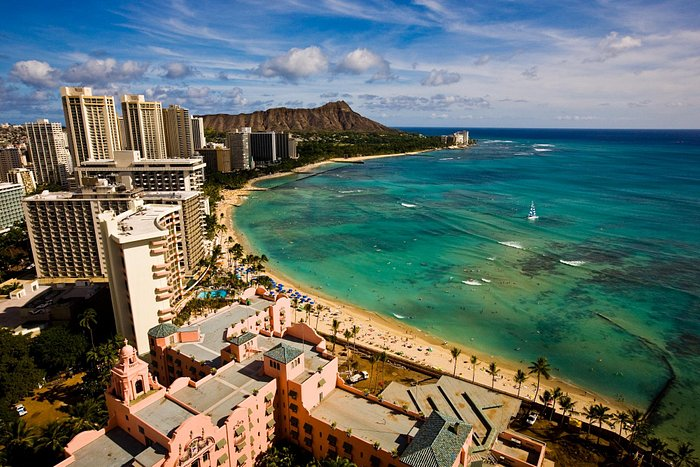

Oahu is popular among travelers and surfers. There are lots of historic sights and incredible beaches on Oahu.
The North Shore
The North Shore is a popular spot for surfing, the area is famous for its massive waves, and international surf competitions are often held here.The North Shore also has a few laid-back towns and some more relaxed beaches where you can snorkel, swim, and enjoy the sunny weather.
Waikiki

This city on Oahu is very touristy and you’ll find a lot of skyscrapers and nice hotels here. However, Waikiki Beach is known as the birthplace of surfing, and the waves and the vibe reflect that. You can enjoy the tourist scene and go shopping, sightseeing, and dining around Waikiki, or you can have a mellow experience and just relax on the postcard-worthy beaches.
Honolulu
The state capital has a ton of monuments and sights that express the history and culture of Hawaii. History enthusiasts can visit one of the many museums, visit the magnificent Lolani Palace, or check out the Pearl Harbor National Memorial.